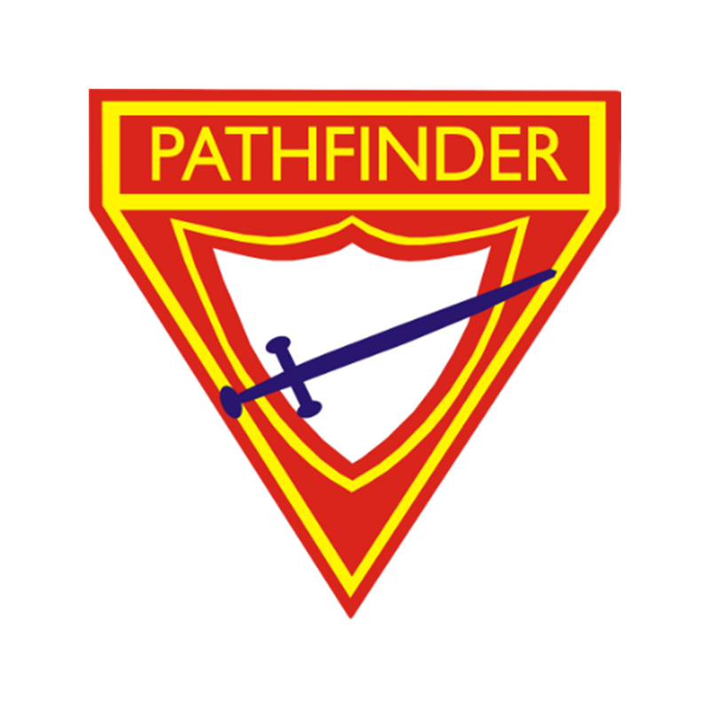
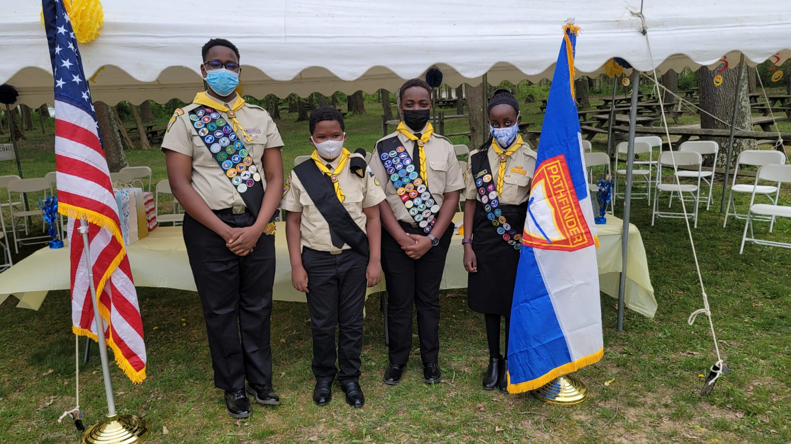
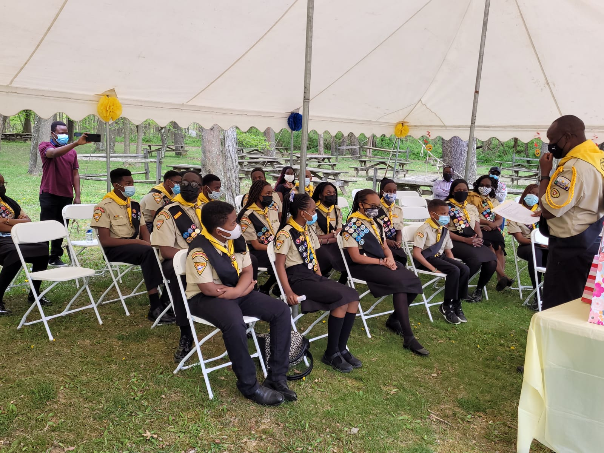
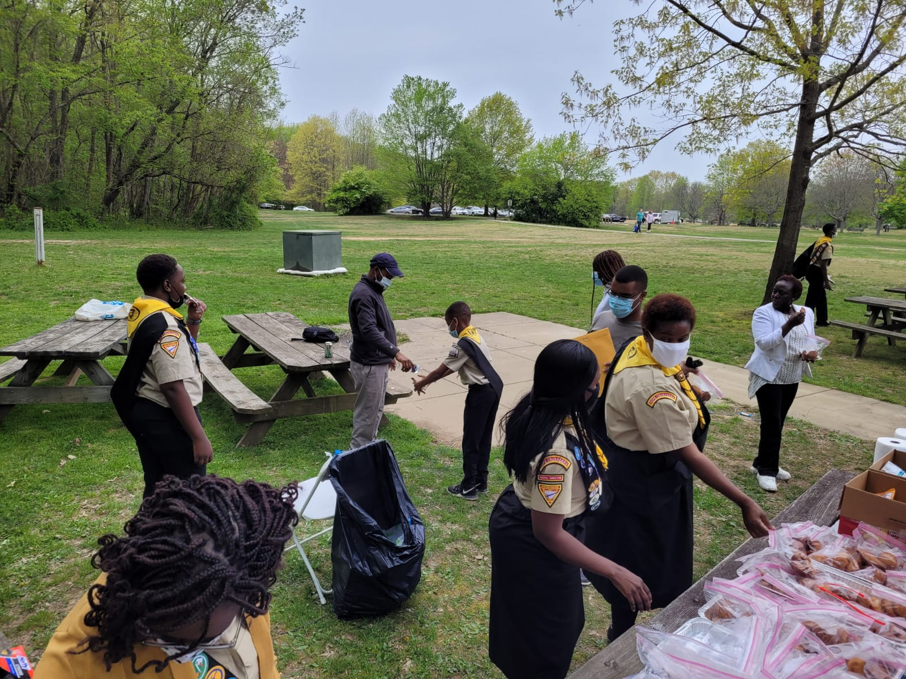
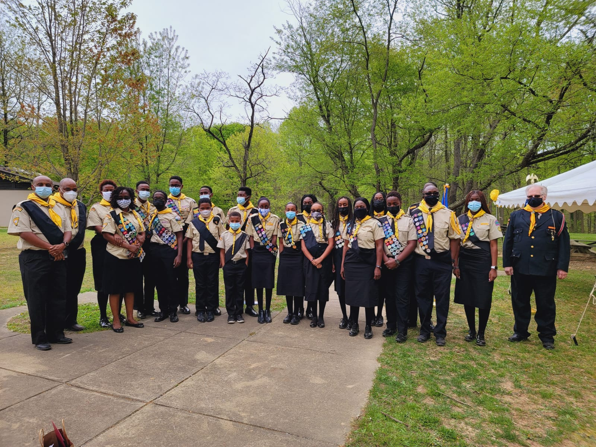
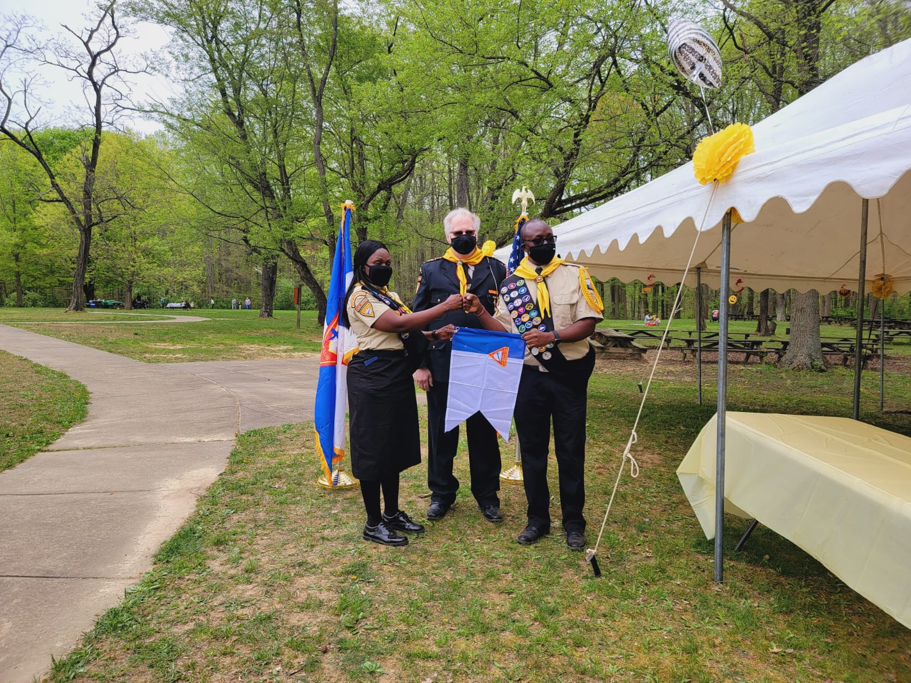

Youth
Children’s Sabbath School
Every Saturday, we conduct fun classes for children (0-12 years old) to learn biblical principles and make new friends as they grow in their walk with Jesus. (Due to COVID-19, we’re holding all classes online. Register below to receive login access for your child’s online class.)
Kindergarten (Ages 4-5): Saturday, 10:30am- 11:00 am
Primary (Ages 6-9): Saturday, 10:30am- 11:00 am
Juniors (Ages 10-15): Saturday, 10:00am- 11:00 am

Adventurer Club (PreK-3- 4th Grade
Adventurers are part of a worldwide organization of children sponsored by the Seventh-day Adventist Church to provide character-building activities for children in grades PreK-3 to 4. Your child will engage in arts and crafts, learn safety skills, discover the secrets of the natural world, and learn more about God through a variety of activities, outings and service activities. Our vision for the club is to help children fall in love with Jesus and learn how to share that love with those around them.
Pathfinder Club (5th -12th Grade)
Pathfinders is a worldwide organization of young people sponsored by the Seventh-day Adventist Church, but young people of any religious persuasion, or none at all, are welcome to join. Pathfinders offer a wide range of activities including camping & survival skills, community outreach, leadership training, and interactive training in a variety of recreational, artistic, nature and vocational outreach areas– with honors given for successful completion of requirements.
Gallery
 

